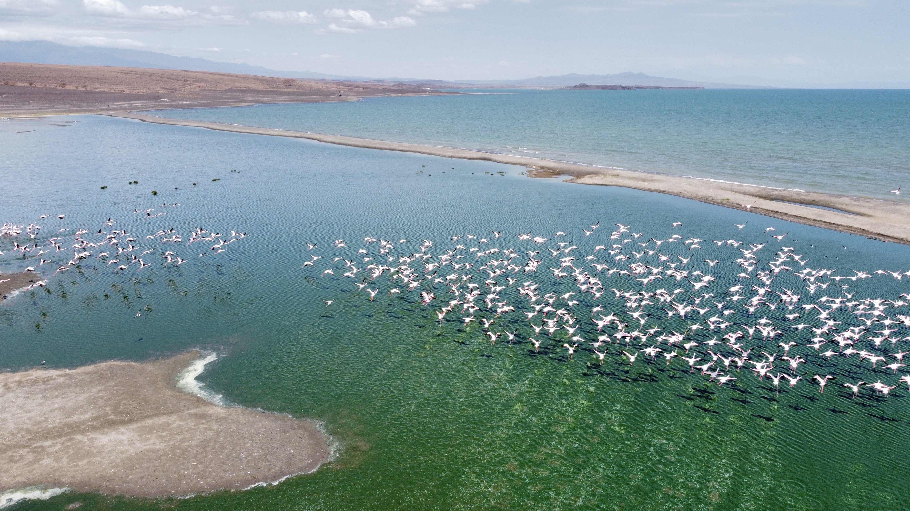
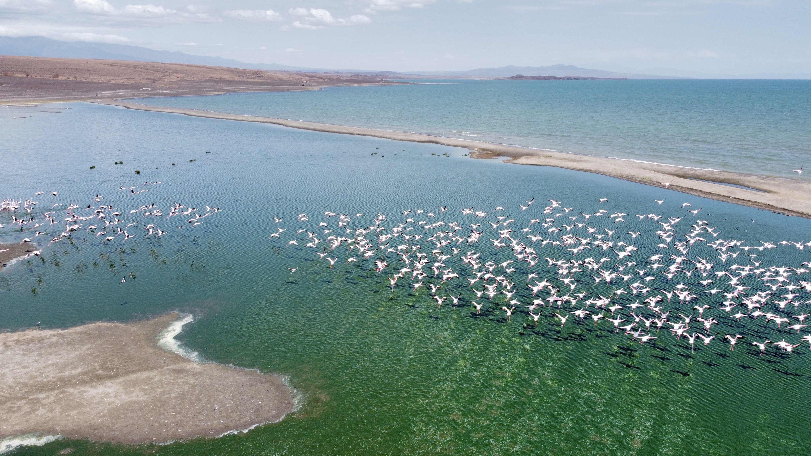

Overlanding in remote Africa
I love exploring Africa, and through these journeys meeting new people, enjoying raw nature and building up my cultural awareness. Additionally I enjoy wildlife photography and fly-fishing which I get the opportunity to do on these trips.
My major interests are my love of nature, wildlife and conservation, especially in Africa. It is my ambition to combine this with the skills and knowledge I would accumulate in doing both an undergraduate and postgraduate degree in AI to help our planet. My career aspirations, as previously mentioned, would be to use new and innovative ways to apply AI and machine learning in assisting with conservation and climate change.
Eastern Africa 2022
duration: 63 days
distance: aprox. 11,000km
Jambo! (hello in Swahili). During this amazing trip exploring Eastern Africa for over 2 months I have fallen in love with the culture, people and the Swahili language. My dad and myself really enjoyed learning a little Swahili from communicating and learning from the incredibly friendly Kenyan people. If my memory serves my right there are 154 tribes in Kenya, with the smallest being the El Molo tribe. The El molo tribe with little under 300 habitants live along the harsh but beautiful lake Turkana, which we were fortunate enough to see.


 


Southern Africa 2021
duration: 50 days
distance: aprox. 7,000km


The Rig - Sandy The Landy
A 1992 Land Rover Defender V8 is the machine of choice, and without a doubt the best offroading vehicle. Fully equiped with a fridge/freezer, roof top tent, extra long-range fuel tank, spare fuel jerry cans, water containers, and everything needed to camp out in the middle of nowhere and live comfortbly for as long as one wants. You might be wondering how this 30 year old vehicle still looks so pristine. Well we had the Defeder completely rebuilt from the chasis up in 2020 to try improve the reliability before embarking on these extensive trips up into Africa. I even got involved in the rebuilding of the Defender, so that to try learn the ins and outs of the mechanics and electrics, so that if something does go wrong out in the middle of nowhere I can diagnose the probem and fix it. For example with supervision I rebuilt the gear box in the defender during this project.

All drone and wildlife photography shot by myself.